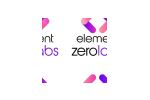
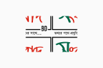

About me
Born and raised in Bangladesh
, as a child, I loved working behind the scenes in school plays,
whether as the light or music technician, or designing props; I
enjoyed doing things that helped the actors on stage shine. This
same passion extends to design for me in the present day: I want to
help other people and businesses shine and do better work.
My passion for design is about serving and helping people. I’m
driven by ambiguity and love to simplify through intentionality,
empowering others through thoughtful designs with a high level of
craft.
TL;DR. I want to build products that help people autonomously and
efficiently create value for themselves and others.

Experience
Product Designer (Hybrid)
JustGo • Full-time
Nov 2022 - Present • 1 yr 6 mos
Rupayan Trade Center, 8th Floor 114, Kazi Nazrul Islam Ave,
Dhaka 1000 • On-site

Product (UX) Designer
Elemets Zero Labs (ENOCH) • Full-time
Jun 2022 - Oct 2022 • 5 mos
London, England, United Kingdom • Remote

User Experience Designer
Songbadbd • Full-time
Apr 2019 - Jul 2021 • 2 yr 4 mos
Bijoy Sarani, Dhaka, Bangladesh • On-site